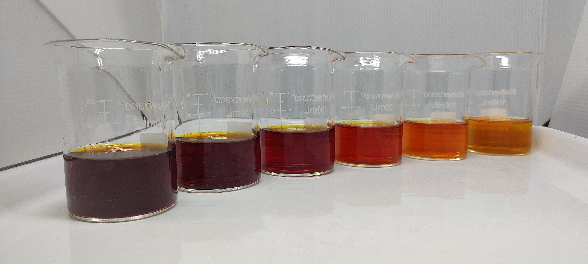
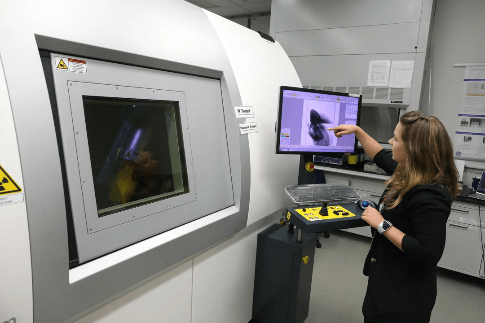
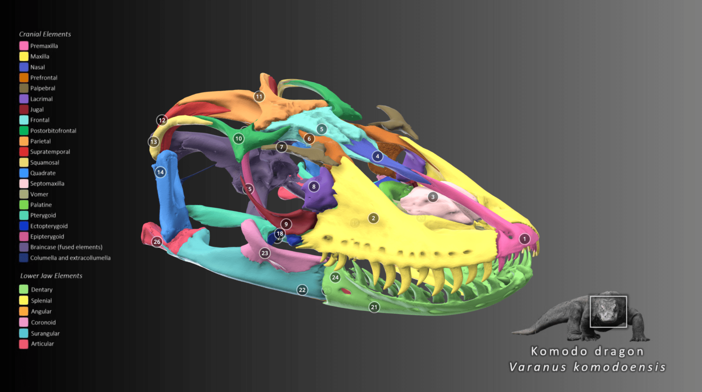

Resources for 3D imaging
Protocols, guides, and tutorials to help you generate and process 3D datasets, from staining a specimen to building an interactive 3D model.

Step 1 · Pre-scan
DiceCT
Lab protocols for using diffusible iodine-based contrast-enhanced CT to stain natural history specimens for soft tissue imaging.

Step 2 · Scanning
CT scanning
Resources for CT scanning and reconstruction I have authored/co-authored.

Step 3 · Post-processing
Scan post-processing
Enhancement, segmentation, and visualisation of CT scan data.

Step 4 · 3D models
3D modelling
Working with meshes to create interactive 3D models.
Get in touch with me if you would like to request a 3D imaging resource or arrange to discuss CT projects!
Send me an email